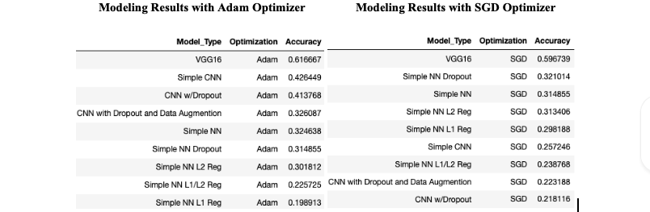
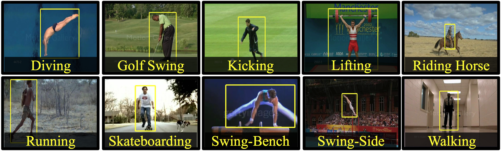

Overview
This project was a project soley focused on the data wrangling portion of the data science project lifecycle. For this project, I had to identify, collect, and clean three seperate data sources into one dataset for future modeling purposes. I chose to collect three different datasets that contained various different information on North Carolina Schools. I a variety of different tools and techniques for obtaining and cleaning data within Python. I first had to learn how to extract data from a variety of different sources including a simple csv/excel file to web scraping and APIs. Data wrangling from the csv file was the easiest wrangling task of this project. The file was in a mostly clean format and just needed minor tweaks. Where I really had to dig in and learn new concepts was the web scraping and API ingesting tools. These techniques took quite a bit of data wrangling in order to obtain and clean the data. The data from the API was in JSON format and I had to learn JSON and how to unpack it with Python. For web scraping, I had to decipher the HTML of the web page that contained the data I wanted to capture. Once I identified where the data was stored in the HTML, I had to unpack it and create a data frame out of the column heading and body of the data.
Data scientists spend 60% of their time on cleaning and organizing data. Collecting data sets comes second at 19% of their time, meaning data scientists spend around 80% of their time on preparing and managing data for analysis, (Forbes, 2016).
After I had all three of these data sources in a clean, easy to understand format, I had to write these data frames to database tables using SQLite3 in Python. This was an excellent tool that made importing pandas data frames into a SQL database easy. Once the three data sources were in a SQL database, I then had to identify the common keys to merge the data sets on. This was the school ID for the School Grades and School County databases. For the School Region database, this was the school county name. This took some trial and error to understand the different join types and how I had to join for each table. Once all three tables were merged, I was able to properly perform data analysis on my combined data set.
Data visualizations were the third major thing I had to learn and complete for my term project. I used Matplotlib as well as Geopandas to create my visualizations for this project. Matplotlib is an excellent module for data visualizations in Python allowing for countless amount of customization. Geopandas was an interesting package I came across on the internet that allowed me to create a visualization on the state of North Carolina.
Sample of some of the merged data from my data wrangling.The Data
The data I used for this project came from three different sources; a csv files, an API in JSON format, and scraped web data from an HTML website. I will go into further details on each dataset below.
The three data sources have a simple relationship between them. The School Database contains the school name, school ID, and municipality for each school in North Carolina. I then created a lookup on the School District Location data to determine the state region location of the school. I then created a new column with this information called school district region. I then linked these two data sources on school district name from the School District Location data and the municipality from the School Database. The School Grades Data connected to the School Database on the school code number from the School Grades Data and the facility id from the School Database
School District Location (Website Data)
This site contains all of the school districts in North Carolina, as well as the education district region they reside within. The School District Location contains all of the school districts in North Carolina and state region locations. I will create a new column with this information called school district location.
School Grades (CSV File)
This file contains the school grades for every school in North Carolina for the 2018-2019 school year. The School Grades Data contains all of the state assessed school grades based on the school’s performance on the North Carolina state testing held the previous year. I will link to the School Database on the school code number from the School Grades Data and the facility id from the School Database.
School Database (API Data)
This API contains location information about each school within North Carolina. The School Database contains school location information, including the school name, school ID, and school district for each school in North Carolina. The School Database will be the primary dataset I will use to connect with the other two data sources.
Method
In order to accomplish this this project, I had to perform different types of data wrangling and transformations on all three data sets. The most challenging data set I had to work with is the School District Location Data. This data is not in an easy to read tabular format. This data is written into chunks on a website page with separate headings for each district location. I needed to use a web page scraper to extract this information into a single table identifying the geographical region for each school district. I then had to create a join with this table and the School District Location Data and create a calculated field to look up each school district and provide the district region for each school. This portion was the most difficult because I did not know how to do either the web scraping or the database lookup/join.
Finally, I had to join the School Grades Data with the School Database on the school code number from the School Grades Data and the facility id from the School Database. These are the unique keys for each school that I can link between the two datasets. This part was not be as difficult as there is a one to one relationship for school each school in each database. The School Grades Data and the School Database are relatively clean data sources. However, I had to do some analysis to review for duplicates, errors in the data, and identifying any additional inconsistencies in the data. Also, I had to ensure every school received a grade. If the school did not receive a grade, I removed those schools. I investigated the reason for a school not having a grade further to ensure the removal will not throw off the analysis, and the schools did not receive a grade for a specific reason.
select grades_counties.*, regions.Region FROM grades_counties LEFT JOIN regions on grades_counties.COUNTY = regions.COUNTYSQL used to merge the data together.
After I had all three of these data sources in a clean, easy to understand format, I had to write these data frames to database tables using SQLite3 in Python. This was an excellent tool that made importing pandas data frames into a SQL database easy. Once the three data sources were in a SQL database, I then had to identify the common keys to merge the data sets on. This was the school ID for the School Grades and School County databases. For the School Region database, this was the school county name. This took some trial and error to understand the different join types and how I had to join for each table. Once all three tables were merged, I was able to properly perform data analysis on my combined data set.
Accuracy and ROC curve for Adam VGG-16 modeling resultsResults
For my modeling, I first ran each optimizer through a 5 epoch cycle of various learning rates to determine the best learning rate for each optimizer. Then I ran each model through both optimizers (SGD and Adam) at the best performing learning rate. I ran each model through a training session and determined the best epoch for running the test data through the model. Too many epochs, and I would be overfitting the data. Too few epochs, and I would not have an accurate enough model. You can see the Python code for all of these models in my GitHub Repository. After my extensive modeling through all 9 models for each optimizer, below are the results for each model.
 Results from the 9 models for both SGD and Adam optimizersAs expected, the modeling leveraging the pre-trained VGG-16 covnet performed the best. I was excited to see an accuracy of 62% as when I started out with the simple NN, I was getting accuracy levels in the teens and low 20s. I felt confident that my model was sufficiently tuned and ready to run the Sports Illustrated covers through. Once I transformed the Sports Illustrated covers to an array appropriate for modeling, I ran the data through the VGG-16 Pretrained Covnet with Adam as an optimizer. The model came back lower than I expected with an accuracy rate of 28% and a loss of about 3. The low loss number was reassuring. However, for this model to be used in a real world setting, I would like to see the accuracy much higher than 28%.
VGG16 is a convolution neural net (CNN ) architecture which was used to win ILSVR (Imagenet) competition in 2014. It is considered to be one of the excellent vision model architectures till date (Thakur, 2020)
Conclusion
In future iterations of this project, I would like to increase the accuracy of the model. This could be done in a variety of different ways in the modeling process. I could also look at isolating the main image and removing any additional details on the cover image that cause unwanted noise for my model. An accuracy of 28% is not as high as I would have hoped for in the beginning of this project. However, I can say that my hypothesis was correct. I was able to create a model that can accurately classify a sports image based on the details and context of the picture. Image recognition will only continue to grow with the increasing power of cell phone cameras as well as the continued adoption of smart cameras like Nest and Ring.
The advent of digital cameras, particularly cameras built into smartphones, has led to an exponential growth in the volume of digital content in the form of images and videos. A vast amount of visual and digital data is being captured and shared through several applications, websites, social networks, and other digital channels. Several businesses have leveraged this online content to deliver better and smarter services to their customers, with the use of digital image processing. For instance, in October 2019, SnapPay Inc., a U.S. based payment platform provider, launched facial recognition payment technology in the North America region. By using this technology in its payment solution, the company has aimed at allowing its customers a new level of convenience for payments at retail outlets (Grand View Research, 2020).
With the fast paced growth of image collecting technology, the amount of image data that can be collected will increase exponentially. The images collected will only continue to be clearer and image recognition will be a powerful tool used in various places like grocery stores, airports, sports areas. You name it, there is most likely a camera present capturing our every move. Having all of this data to simplify and improve our lives will be a major incentive for companies in the future.
Citations
Bennett, A. J. (2020, May 2). List of Top 10 Best Sports Magazines of All Time. Retrieved April 16, 2021, from https://posora.com/best-sports-magazines/
Grand View Research. (2020, March). Image Recognition Market Size Worth $109.4 Billion By 2027. Retrieved April 16, 2021, from https://www.grandviewresearch.com/press-release/global-image-recognition-market
mediumnok. (2021, April 19). ADAM in 2019 — What’s the next ADAM optimizer - Towards Data Science. Medium. https://towardsdatascience.com/adam-in-2019-whats-the-next-adam-optimizer-e9b4a924b34f#:%7E:text=Adam%20is%20great%2C%20it’s%20much,2019%20were%20still%20using%20SGD
Thakur, R. (2020, November 24). Step by step VGG16 implementation in Keras for beginners. Medium. https://towardsdatascience.com/step-by-step-vgg16-implementation-in-keras-for-beginners-a833c686ae6c